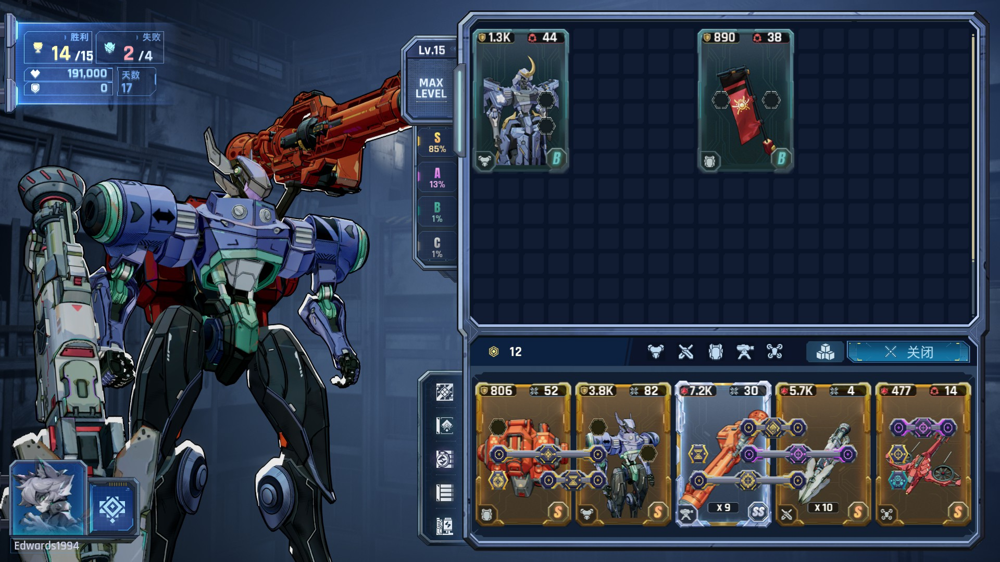

14胜2负 · Lv15 · 191000生命 · 剩12金 · 本配置尚未出战。
RSI记录 · 原候选比较（含被反驳预测） · 最终结构化数据
绿圈16个已连接；红圈2个被桥身遮挡；灰圈3个空孔。肩右下被多段桥遮挡，手左中被伤害桥遮挡。空孔在背左上、甲左上/右中。10件配件全部已装，没有闲置配件。
肩与手同时共享：+6段长桥、坚固+600%伤害长桥、使用时互相加速2秒短桥。肩独享−10%冷却。背甲共享主属性+200%和−12.5%冷却；成长单孔给背。无人机顶部自桥+200%只算一件受益，左中火控+120%，左下力量+4。
| 装备 | 主属性 | 段数 | 冷却 |
|---|---|---|---|
| S曙光背 | 806盾 / 52坚固 | — | 5.2秒 |
| S塞玛甲 | 3.8K盾 / 82坚固 | — | 11.4秒 |
| SS链法肩 | 7.2K伤害 / 30坚固 | 9 | 6.9秒 |
| S虚空手 | 5.7K伤害 / 4坚固 | 10 | 2.6秒 |
| S式神机 | 477伤害 / 14力量 | 召唤1 | 7.1秒 |
冷却是静态UI显示值，不是实际首次有效命中时间。
让已有快手直接带动肩炮，减少加速先经过无人机的依赖；曙光的坚固成长与全体减速，配合塞玛获得坚固时的随机加速，为肩输出创造候选窗口。随机加速不能保证落到肩，也不是直接充能2秒。尚未观测整条战斗链。
出售未上阵的S神速+16，购买曙光与塞玛各32：60+16−64=12。旧B背甲留库。新甲/背初始盾和原构筑静态总轮伤害较低，放弃旧物伤产盾与力量被动，换取控制、坚固成长、加速与槽位；这项取舍尚未经实战验证。
1680种装备顺序、44512个最终布局的搜索仍不是全局最优。手工选定后也遗漏了无人机自桥与左中单孔可共存，实装时修正，原预测保留。此后固定核心桥后必须审计每个剩余孔与库存单孔，不以一份候选表结束优化。
无人机无伤害件138，仅120%火控265，仅200%短桥350，两件合用477；原统一基础值反推不准确，保留实测查表，不伪造已解释公式。蓝附魔最终在力量机成功，不能据此前坚固背甲的拖入失败断言属性限制。
多次拖放失败；部分在清除说明、等待界面稳定、调整拾取点/槽心后成功。尚未隔离根因，不新增确定游戏Bug。副作用和失败截图均保留。
本次批采→比较→购买→实装验收17分16秒，含分析和重试；不是完整一天，后续归档未计入。速度仍受装配失败和候选补漏影响。

优先更强单孔冷却或快手直接充能肩的桥，比较首击和重复触发；其次按生存瓶颈考虑背左上—甲左上空孔长桥。当前商店160%盾长桥售价24、现金12，几何可容纳但未购买。若两件均生效，初始合计约+2384盾，不等于实际吸收伤害。
核心能稳定出手后，再优先同形高倍率坚固伤害桥、坚固产出与多段升级。甲右中—肩左中可作为新短桥候选，但要计算失去肩10%CD、将旧CD移到背的净变化。坚固量提高不自动等于随机加速触发次数增加。任何新件都要带回整排比较，不能把当前布局固定。
候选落点、代价与验证指标。本次只讨论，游戏未操作，新配装仍未实战。
开场375力量与持续力量配合手10段/肩9段；600%伤害和+6段桥各服务两件核心。快手与肩互加速，曙光提供减速/坚固成长，S甲获得坚固随机加速，肩每坚固转伤。此为机制支持的候选链，当前布局缺最后战报，不能称已实战验证。
缺口：核心启动保障、启动前生存、确定的成长触发频率。新背甲静态盾较低；主属性桥仅发挥200%而非力量600%；背每秒4%主属性短战可能低收益。无人机几件伤害/附魔配件已利用孔位，但不等于优先投资目标；部署力量的支援价值须保留。后续根据实际首击与承伤瓶颈替换功能件，不机械填孔或追品级。
用户已跳过结算；最终胜负未读，不将最近14胜2负快照冒充终局成绩。完整结构记录